library("ggsignif") #put significance "stars" on boxplots
library("infer") #pipeline workflow for hypothesis testing
library("janitor") #compute proportions easily
library("moderndive") #textbook's package and data
library("patchwork") #easily let's me show graphs side-by-side
library("tidyverse") #the overall programming style universe
# school colors
princeton_orange <- "#E77500"
princeton_black <- "#121212"
# data set: Portland Crime Data
offense_cat <- readr::read_csv("offense_cat.csv")
victim_cat <- readr::read_csv("victim_cat.csv")
# data set: SML 201 demographics survey
# demo_df <- readr::read_csv("https://raw.githubusercontent.com/dsollberger/sml201slides/main/posts/04_categories/sml201survey.csv")
demo_df <- readr::read_csv("sml201survey.csv")
# Derek's visualization helper functions
source("vdist.R")SML 201
NoteLibraries and Helper Functions
Start
Goal: Continue to explore hypothesis testing and two-sided tests
Objective: Get “stars” and significance levels
Case Study: Portland Crime Data
“The Monthly Reported Crime Statistics is an interactive data visualization of the offenses reported to the Portland Police Bureau. This report is built to provide custom analyses of the reported crime data to interested members of the community, especially as it relates to the Portland neighborhoods and council districts.”
spc_tbl_ [10,706 × 4] (S3: spec_tbl_df/tbl_df/tbl/data.frame)
$ CouncilDistrict: num [1:10706] 1 1 NA 2 3 3 1 1 1 2 ...
$ OffenseCategory: chr [1:10706] "Fraud Offenses" "Larceny Offenses" "Vandalism" "Vandalism" ...
$ ReportMonthYear: chr [1:10706] "January 2015" "January 2015" "January 2015" "January 2015" ...
$ CrimeCount : num [1:10706] 104 415 25 155 117 558 143 126 21 475 ...spc_tbl_ [2,011 × 4] (S3: spec_tbl_df/tbl_df/tbl/data.frame)
$ CouncilDistrict: num [1:2011] 1 NA 2 3 1 4 1 2 4 2 ...
$ CrimeAgainst : chr [1:2011] "Property" "Property" "Property" "Property" ...
$ ReportMonthYear: chr [1:2011] "January 2015" "January 2015" "January 2015" "January 2015" ...
$ CrimeCount : num [1:2011] 992 409 894 1060 95 909 10 48 5 8 ...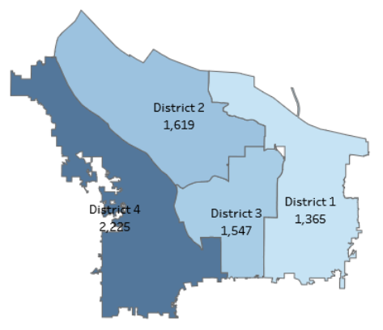
- District 1: suburban
- District 4: downtown
- Counts shown were for vandalism reports in the previous 12 months.
districts_1_4 <- offense_cat |>
filter(CouncilDistrict %in% c("1", "4")) |>
mutate(CouncilDistrict = factor(CouncilDistrict))Example: Fraud
NoteNHST Test Type
For NHST (null hypothesis significance testing), this example is a two-sided tests of means.
- Colloquially: District 1 and District 4 have different amounts of fraud reports (per month)
- Null hypothesis: District 1 and District 4 have the same amounts of fraud reports (per month)
- Alternative hypothesis: District 1 and District 4 have different amounts of fraud reports (per month)
\[H_{o}: \mu_{1} = \mu_{4}\] \[H_{a}: \mu_{1} \neq \mu_{4}\]
Sample Statistics
districts_1_4 |>
filter(OffenseCategory == "Fraud Offenses") |>
group_by(CouncilDistrict) |>
summarize(xbar = mean(CrimeCount, na.rm = TRUE),
s = sd(CrimeCount, na.rm = TRUE))# A tibble: 2 × 3
CouncilDistrict xbar s
<fct> <dbl> <dbl>
1 1 75.5 20.5
2 4 75.1 16.5Boxplot
districts_1_4 |>
filter(OffenseCategory == "Fraud Offenses") |>
ggplot(aes(x = CouncilDistrict,
y = CrimeCount,
fill = CouncilDistrict,
group = CouncilDistrict)) +
geom_boxplot() +
labs(title = "Does District Location affect Fraud Prevalance?",
subtitle = "(toward two-means hypothesis testing)",
caption = "SML 201",
x = "council district", y = "crime reports (per month)") +
theme_minimal(base_size = 16) +
theme(legend.position = "none")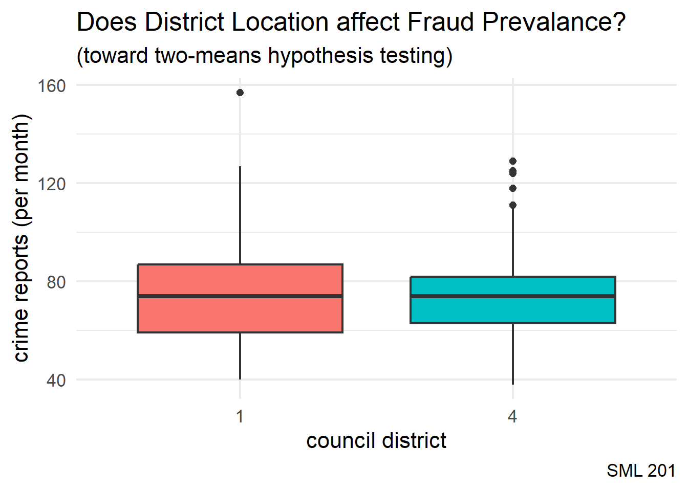
TipIntuition
The boxplot visualization lets us guess at whether or not the means for the two groups are significantly different (or not).
WarningDCP1
Modern Approach (infer)
Null Distribution
In the modern approach, with the infer code package, we build a null distribution (i.e. District 1 and District 4 have the same amounts of fraud reports (per month)).
NotePermutation Test
If the district location here did not affect the number of fraud reports, then it shouldn’t matter if we permute the “1” or “4” labels.
null_distribution <- districts_1_4 |>
filter(OffenseCategory == "Fraud Offenses") |>
specify(formula = CrimeCount ~ CouncilDistrict) |>
hypothesize(null = "independence") |>
generate(reps = 1000, type = "permute") |>
calculate(stat = "diff in means", order = c("1", "4"))obs_diff <- districts_1_4 |>
filter(OffenseCategory == "Fraud Offenses") |>
specify(formula = CrimeCount ~ CouncilDistrict) |>
# hypothesize(null = "independence") |>
# generate(reps = 1000, type = "permute") |>
calculate(stat = "diff in means", order = c("1", "4"))Visualization
Tipp-value
“The p-value is the probability of obtaining a test statistic just as extreme or more extreme than the observed test statistic assuming the null hypothesis \(H_0\) is true”
null_distribution |>
visualize() +
labs(title = "Does District Location affect Fraud Prevalance?",
subtitle = "Two-Sided Hypothesis Test",
caption = "SML 201",
x = "difference between Portland districts") +
shade_p_value(obs_diff, direction = "two-sided",
color = princeton_black, fill = princeton_orange) +
theme_minimal(base_size = 16)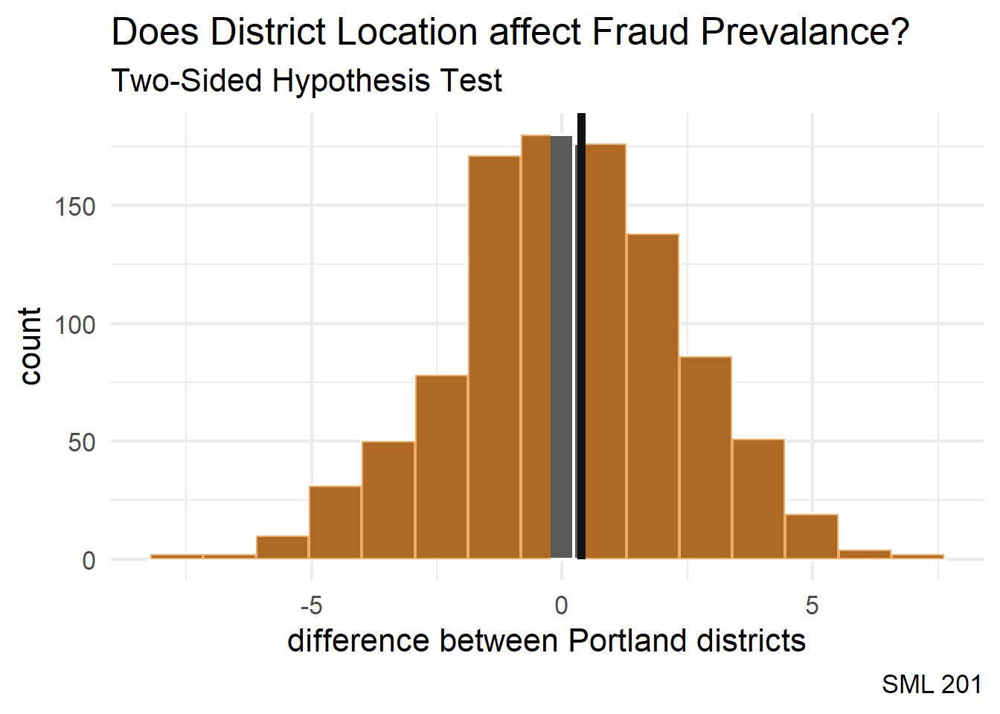
NoteTwo-Sided
Since our p-value search looks at both tails of the null distribution, we call this a two-sided test.
Conclusion
null_distribution |>
get_p_value(obs_diff, direction = "two-sided")# A tibble: 1 × 1
p_value
<dbl>
1 0.892
WarningInconclusive
Since the p-value > 0.05, we have failed to reject the null hypothesis that District 1 and District 4 have the same amounts of fraud reports per month (at the \(\alpha = 0.05\) significance level).
We may treat this result as inconclusive or note that we have not found evidence here toward showing that district location affects prevalence of fraud.
Example: Vandalism
NoteNHST Test Type
For NHST (null hypothesis significance testing), this example is a two-sided tests of means.
- Colloquially: District 1 and District 4 have different amounts of vandalism reports (per month)
- Null hypothesis: District 1 and District 4 have the same amounts of vandalism reports (per month)
- Alternative hypothesis: District 1 and District 4 have different amounts of vandalism reports (per month)
\[H_{o}: \mu_{1} = \mu_{4}\] \[H_{a}: \mu_{1} \neq \mu_{4}\]
Sample Statistics
districts_1_4 |>
filter(OffenseCategory == "Vandalism") |>
group_by(CouncilDistrict) |>
summarize(xbar = mean(CrimeCount, na.rm = TRUE),
s = sd(CrimeCount, na.rm = TRUE))# A tibble: 2 × 3
CouncilDistrict xbar s
<fct> <dbl> <dbl>
1 1 138. 30.9
2 4 190. 81.1Boxplot
districts_1_4 |>
filter(OffenseCategory == "Vandalism") |>
ggplot(aes(x = CouncilDistrict,
y = CrimeCount,
fill = CouncilDistrict,
group = CouncilDistrict)) +
geom_boxplot() +
labs(title = "Does District Location affect Vandalism Prevalance?",
subtitle = "(toward two-means hypothesis testing)",
caption = "SML 201",
x = "council district", y = "crime reports (per month)") +
theme_minimal(base_size = 16) +
theme(legend.position = "none")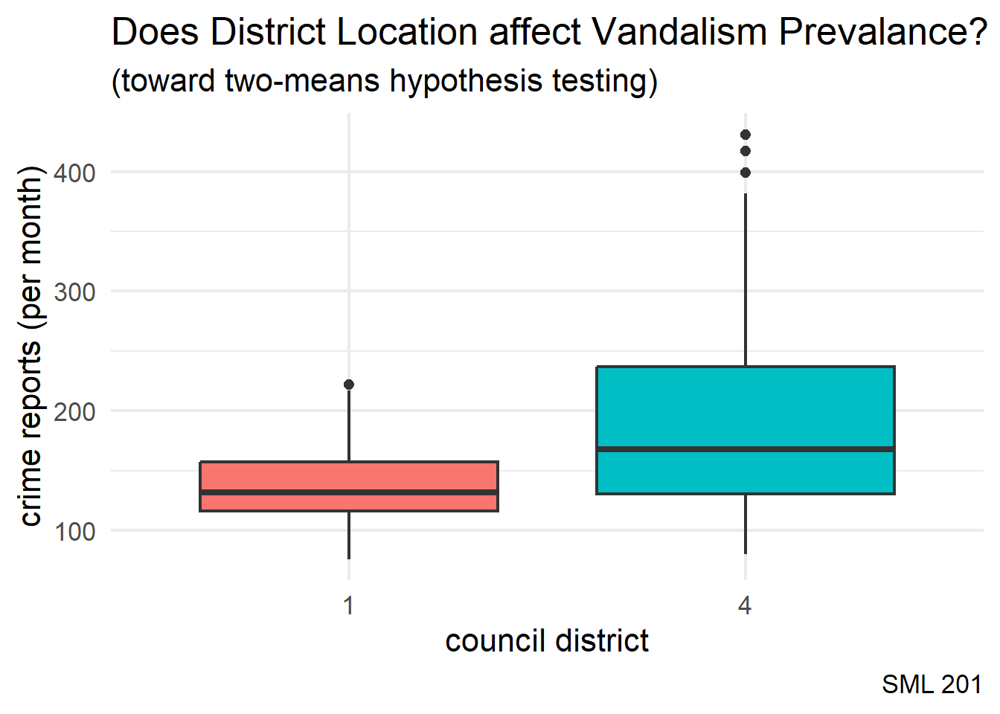
TipIntuition
The boxplot visualization lets us guess at whether or not the means for the two groups are significantly different (or not).
Modern Approach (infer)
Null Distribution
In the modern approach, with the infer code package, we build a null distribution (i.e. District 1 and District 4 have the same amounts of vandalism reports (per month)).
NotePermutation Test
If the district location here did not affect the number of vandalism reports, then it shouldn’t matter if we permute the “1” or “4” labels.
null_distribution <- districts_1_4 |>
filter(OffenseCategory == "Vandalism") |>
specify(formula = CrimeCount ~ CouncilDistrict) |>
hypothesize(null = "independence") |>
generate(reps = 1000, type = "permute") |>
calculate(stat = "diff in means", order = c("1", "4"))obs_diff <- districts_1_4 |>
filter(OffenseCategory == "Vandalism") |>
specify(formula = CrimeCount ~ CouncilDistrict) |>
# hypothesize(null = "independence") |>
# generate(reps = 1000, type = "permute") |>
calculate(stat = "diff in means", order = c("1", "4"))Visualization
Tipp-value
“The p-value is the probability of obtaining a test statistic just as extreme or more extreme than the observed test statistic assuming the null hypothesis \(H_0\) is true”
null_distribution |>
visualize() +
labs(title = "Does District Location affect Vandalism Prevalance?",
subtitle = "Two-Sided Hypothesis Test",
caption = "SML 201",
x = "difference between Portland districts") +
shade_p_value(obs_diff, direction = "two-sided",
color = princeton_black, fill = princeton_orange) +
theme_minimal(base_size = 16)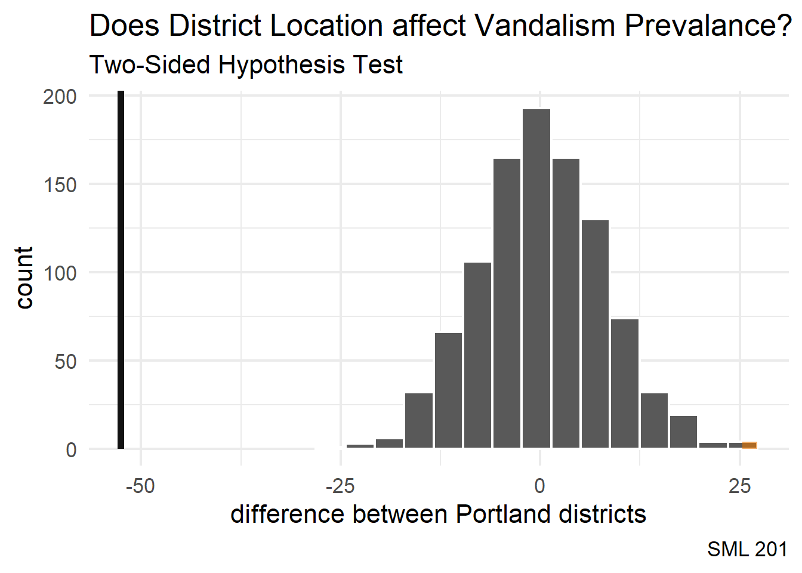
NoteTwo-Sided
Since our p-value search looks at both tails of the null distribution, we call this a two-sided test.
Conclusion
null_distribution |>
get_p_value(obs_diff, direction = "two-sided")Warning: Please be cautious in reporting a p-value of 0. This result is an approximation
based on the number of `reps` chosen in the `generate()` step.
ℹ See `get_p_value()` (`?infer::get_p_value()`) for more information.# A tibble: 1 × 1
p_value
<dbl>
1 0
TipSome Evidence
Since the p-value < 0.05, we reject the null hypothesis that District 1 and District 4 have the same amounts of vandalism reports per month (at the \(\alpha = 0.05\) significance level).
We may treat this as having found some evidence that there may be a relationship between district location and vandalism presence.
WarningDCP2
Old Method (t-test)
Pooled Variance
The old-fashioned way of computing a two-means hypothesis test was conducted through the \(t\)-distribution through the pooled variance
\[t = \frac{\bar{x}_{1} - \bar{x}_{2}}{\sqrt{\frac{s_{p}^{2}}{n_{1}} + \frac{s_{p}^{2}}{n_{2}}}} \text{ with } s_{p}^{2} = \frac{(n_{1}-1)s_{1}^{2} + (n_{2}-1)^{2}s_{2}^{2}}{n_{1} + n_{2} - 2}\]
vandalism_district_1 <- districts_1_4 |>
filter(CouncilDistrict == "1") |>
filter(OffenseCategory == "Vandalism") |>
pull(CrimeCount)
vandalism_district_4 <- districts_1_4 |>
filter(CouncilDistrict == "4") |>
filter(OffenseCategory == "Vandalism") |>
pull(CrimeCount)
xbar1 <- mean(vandalism_district_1)
xbar2 <- mean(vandalism_district_4)
s1 <- sd(vandalism_district_1)
s2 <- sd(vandalism_district_4)
n1 <- length(vandalism_district_1)
n2 <- length(vandalism_district_4)
pooled_var <- ((n1 - 1)*s1^2 + (n2-1)*s2^2) / (n1 + n2 - 2)
t_stat <- (xbar1 - xbar2) / sqrt(pooled_var/n1 + pooled_var/n2)
crit_val <- qt(c(0.025, 0.975), df = n1 + n2 - 2)Comparison
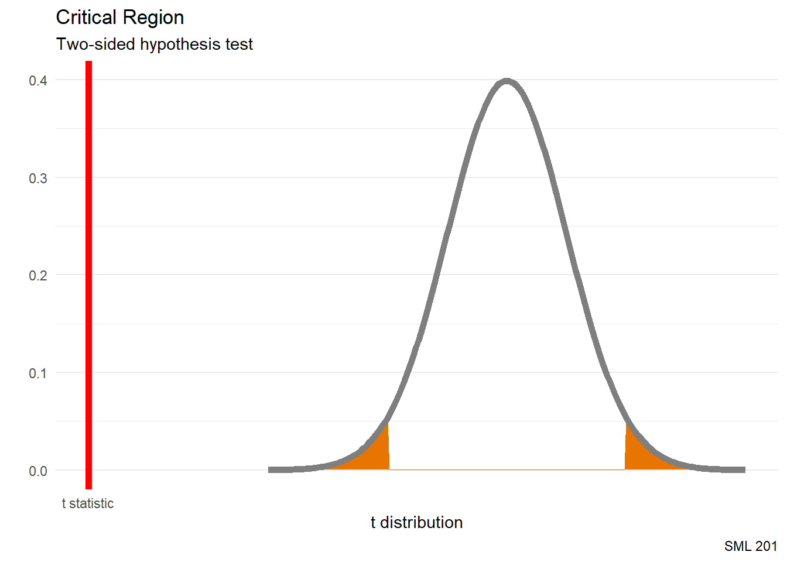
ImportantCritical Region
That is, in order to reject the null hypothesis, we wanted the \(t\) statistic to be inside of the critical region.
p1 <- vnorm(crit_val, section = "tails") +
geom_vline(aes(xintercept = t_stat),
color = "red", linewidth = 2) +
labs(title = "Critical Region",
subtitle = "Two-sided hypothesis test",
caption = "SML 201",
x = "t distribution") +
scale_x_continuous(breaks = t_stat,
labels = "t statistic")
p2 <- vnorm(t_stat, section = "lower") +
geom_vline(aes(xintercept = t_stat),
color = "red", linewidth = 2) +
labs(title = "p-value",
subtitle = "Two-sided hypothesis test",
caption = "SML 201",
x = "t distribution") +
scale_x_continuous(breaks = t_stat,
labels = "t statistic")
# patchwork
p1 / p2t.test
t.test(vandalism_district_1, vandalism_district_4,
alternative = "two.sided")
Welch Two Sample t-test
data: vandalism_district_1 and vandalism_district_4
t = -7.0158, df = 170.75, p-value = 5.132e-11
alternative hypothesis: true difference in means is not equal to 0
95 percent confidence interval:
-67.38616 -37.79294
sample estimates:
mean of x mean of y
137.7463 190.3358
NoteWelch modification
While the Student t test assumed that the two quantities had the same variance, the Welch modification (which R used above) handles cases where the variances may be different (and their pooled variance).
TipSome Evidence
Since the p-value < 0.05, we reject the null hypothesis that District 1 and District 4 have the same amounts of vandalism reports per month (at the \(\alpha = 0.05\) significance level).
We may treat this as having found some evidence that there may be a relationship between district location and vandalism presence.
Regression Redux
Let us return to linear regression and visit concepts that we skipped before.
Number of Courses versus Age
- response variable:
numCourses(i.e. number of courses taken before this semester) - explanatory variable:
age
\[\hat{y} = \beta_{0} + \beta_{1}X_{1}\]
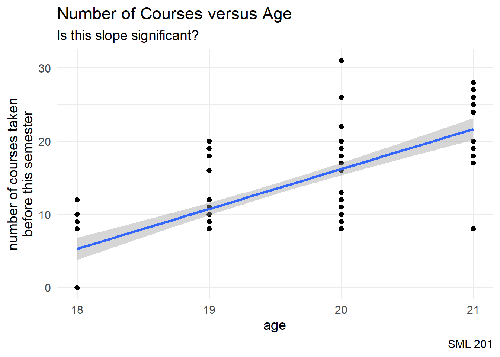
demo_long <- demo_df |>
filter(age >= 18 & age <= 21) |>
filter(!is.na(numCourses))
demo_long |>
ggplot(aes(x = age, y = numCourses)) +
geom_point() +
geom_smooth(formula = "y ~ x",
method = "lm",
se = TRUE) +
labs(title = "Number of Courses versus Age",
subtitle = "Is this slope significant?",
caption = "SML 201",
y = "number of courses taken\nbefore this semester") +
theme_minimal(base_size = 14)Model Statistics
lin_fit <- lm(numCourses ~ age, data = demo_long)
summary(lin_fit)
Call:
lm(formula = numCourses ~ age, data = demo_long)
Residuals:
Min 1Q Median 3Q Max
-13.6380 -2.7257 -0.7257 2.8181 14.8181
Coefficients:
Estimate Std. Error t value Pr(>|t|)
(Intercept) -92.9408 8.6081 -10.80 <2e-16 ***
age 5.4561 0.4408 12.38 <2e-16 ***
---
Signif. codes: 0 '***' 0.001 '**' 0.01 '*' 0.05 '.' 0.1 ' ' 1
Residual standard error: 4.105 on 121 degrees of freedom
Multiple R-squared: 0.5588, Adjusted R-squared: 0.5551
F-statistic: 153.2 on 1 and 121 DF, p-value: < 2.2e-16NHST
For a regression model, each coefficent is treated as a hypothesis test.
- null hypothesis: coefficient \(\beta_{1}\) is zero
- alternative hypothesis: coefficient \(\beta_{1}\) is nonzero
\[H_{o}: \beta_{1} = 0\] \[H_{a}: \beta_{1} \neq 0\]
# p-value (from summary of linear model)
summary(lin_fit)$coefficients[2, 4][1] 3.05501e-23
TipSome Evidence
Since the p-value < 0.05, we have reject the null hypothesis that the \(\beta_{1}\) coefficient is zero (at the \(\alpha = 0.05\) significance level).
We may treat this result as having found some evidence that there may be a relationship between age and and the number of courses taken.
GPA versus Shoe Size
- response variable:
GPA - explanatory variable:
shoeSize
\[\hat{y} = \beta_{0} + \beta_{1}X_{1}\]
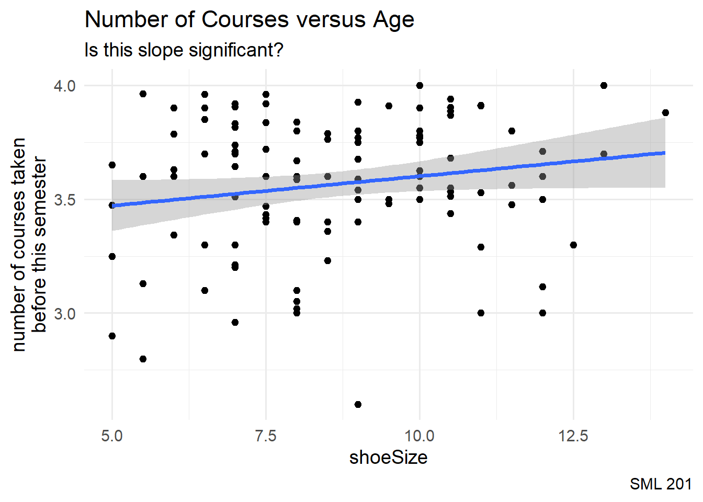
demo_long <- demo_df |>
filter(GPA > 0 & GPA <= 4.0) |>
filter(shoeSize >= 5 & shoeSize <= 20)
demo_long |>
ggplot(aes(x = shoeSize, y = GPA)) +
geom_point() +
geom_smooth(formula = "y ~ x",
method = "lm",
se = TRUE) +
labs(title = "Number of Courses versus Age",
subtitle = "Is this slope significant?",
caption = "SML 201",
y = "number of courses taken\nbefore this semester") +
theme_minimal(base_size = 14)Model Statistics
lin_fit <- lm(GPA ~ shoeSize, data = demo_long)
summary(lin_fit)
Call:
lm(formula = GPA ~ shoeSize, data = demo_long)
Residuals:
Min 1Q Median 3Q Max
-0.97540 -0.15362 0.03751 0.21608 0.47696
Coefficients:
Estimate Std. Error t value Pr(>|t|)
(Intercept) 3.34304 0.11967 27.935 <2e-16 ***
shoeSize 0.02582 0.01354 1.907 0.059 .
---
Signif. codes: 0 '***' 0.001 '**' 0.01 '*' 0.05 '.' 0.1 ' ' 1
Residual standard error: 0.2943 on 114 degrees of freedom
Multiple R-squared: 0.03093, Adjusted R-squared: 0.02243
F-statistic: 3.638 on 1 and 114 DF, p-value: 0.05898# p-value (from summary of linear model)
summary(lin_fit)$coefficients[2, 4][1] 0.05898412
WarningInconclusive
Since the p-value > 0.05, we have failed to reject the null hypothesis that the \(\beta_{1}\) coefficient is zero (at the \(\alpha = 0.05\) significance level).
We may treat this result as inconclusive or note that we have not found evidence here toward showing a relationship between GPA and shoe size.
Stargazing (visuals)
Tipggsignif
The ggsignif package greatly enhances boxplots for “stargazing” for levels of significance.
Significant
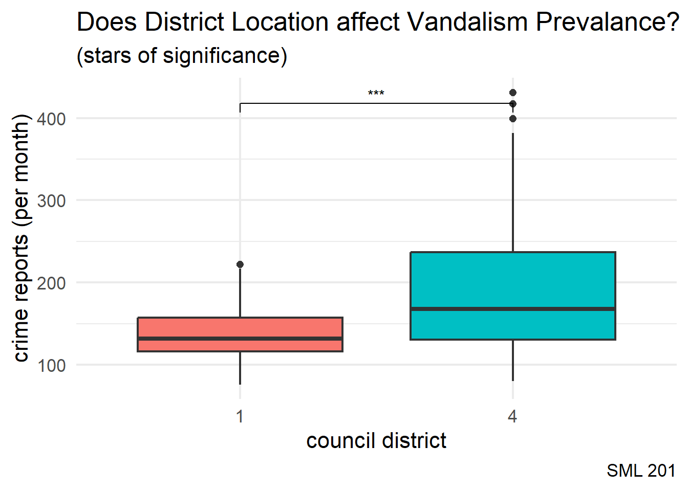
districts_1_4 |>
filter(OffenseCategory == "Vandalism") |>
ggplot(aes(x = CouncilDistrict,
y = CrimeCount,
fill = CouncilDistrict,
group = CouncilDistrict)) +
geom_boxplot() +
geom_signif(
comparisons = list(c("1", "4")),
map_signif_level = TRUE,
y_position = 400
) +
labs(title = "Does District Location affect Vandalism Prevalance?",
subtitle = "(stars of significance)",
caption = "SML 201",
x = "council district", y = "crime reports (per month)") +
theme_minimal(base_size = 16) +
theme(legend.position = "none")Not Significant
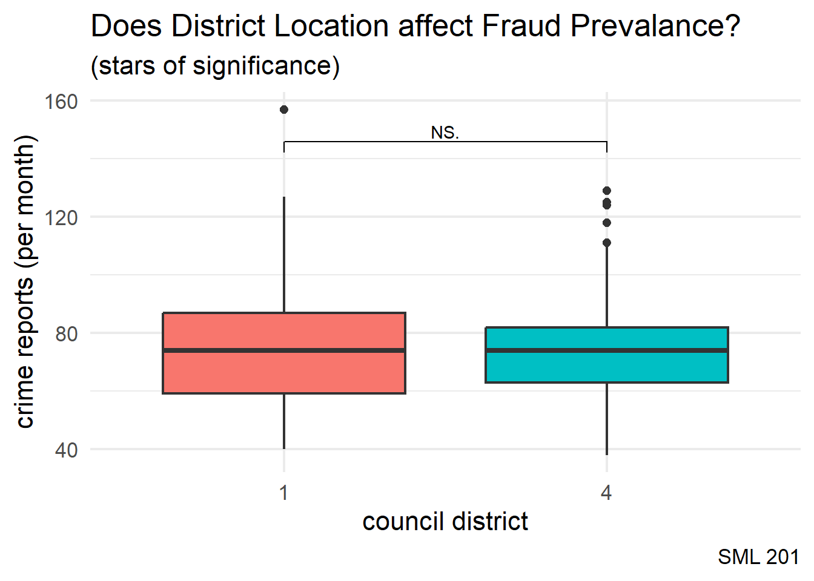
districts_1_4 |>
filter(OffenseCategory == "Fraud Offenses") |>
ggplot(aes(x = CouncilDistrict,
y = CrimeCount,
fill = CouncilDistrict,
group = CouncilDistrict)) +
geom_boxplot() +
geom_signif(
comparisons = list(c("1", "4")),
map_signif_level = TRUE,
y_position = 140
) +
labs(title = "Does District Location affect Fraud Prevalance?",
subtitle = "(stars of significance)",
caption = "SML 201",
x = "council district", y = "crime reports (per month)") +
theme_minimal(base_size = 16) +
theme(legend.position = "none")
WarningDCP3
Toward ANOVA
Significant
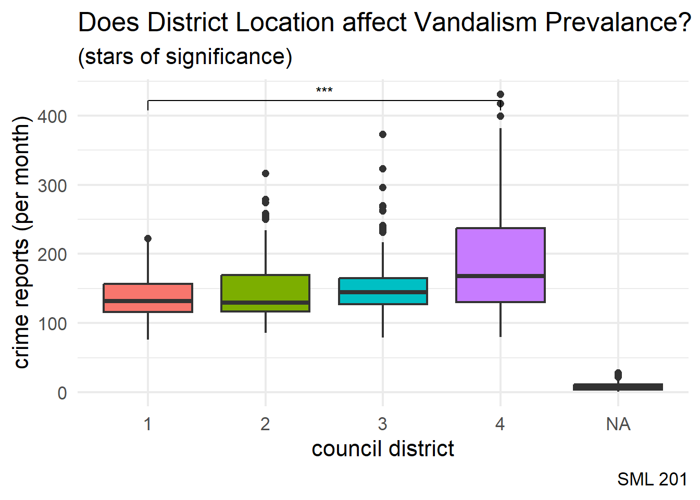
offense_cat |>
filter(OffenseCategory == "Vandalism") |>
mutate(CouncilDistrict = factor(CouncilDistrict)) |>
ggplot(aes(x = CouncilDistrict,
y = CrimeCount,
fill = CouncilDistrict,
group = CouncilDistrict)) +
geom_boxplot() +
geom_signif(
comparisons = list(c("1", "4")),
map_signif_level = TRUE,
y_position = 400
) +
labs(title = "Does District Location affect Vandalism Prevalance?",
subtitle = "(stars of significance)",
caption = "SML 201",
x = "council district", y = "crime reports (per month)") +
theme_minimal(base_size = 16) +
theme(legend.position = "none")Not Significant
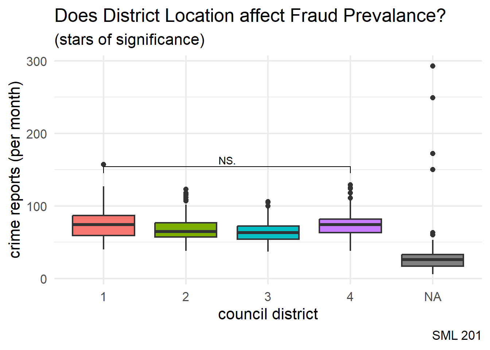
offense_cat |>
filter(OffenseCategory == "Fraud Offenses") |>
mutate(CouncilDistrict = factor(CouncilDistrict)) |>
ggplot(aes(x = CouncilDistrict,
y = CrimeCount,
fill = CouncilDistrict,
group = CouncilDistrict)) +
geom_boxplot() +
geom_signif(
comparisons = list(c("1", "4")),
map_signif_level = TRUE,
y_position = 140
) +
labs(title = "Does District Location affect Fraud Prevalance?",
subtitle = "(stars of significance)",
caption = "SML 201",
x = "council district", y = "crime reports (per month)") +
theme_minimal(base_size = 16) +
theme(legend.position = "none")Quo Vadimus?
- Due Friday (April 3)
- Precept 8
- Historical Case Studies in Ethics (AI allowed!)
- Project 2 (due April 7)
- Exam 2 (April 23)
Footnotes
Note(optional) Additional Resources
===
Some students were asking about how to specifically show the endpoints of the confidence interval on the horizontal axis of the histogram that is produced by visualize. This skill is not required for Precept 8 or other tasks that ask for visualize, but I went ahead and assembled a quick example below.
1. `scale_x_continuous` to set breaks (locations) and labels
2. needed to convert `ci_per` from a tibble to a vectorlibrary("palmerpenguins")
bootstrap_distribution <- penguins |>
filter(!is.na(body_mass_g)) |>
specify(response = body_mass_g) |>
generate(reps = 1000, type = "bootstrap") |>
calculate(stat = "mean")
ci_per <- bootstrap_distribution |> get_ci(level = 0.95)
ci_vec <- as.vector(unlist(ci_per))
bootstrap_distribution |>
visualize() +
labs(title = "Palmer Penguins",
subtitle = "Confidence Interval for Body Mass",
caption = "SML 201",
x = "body mass (grams)") +
scale_x_continuous(breaks = ci_vec,
labels = round(ci_vec, 1)) +
shade_ci(ci_per, color = "black", fill = "orange") +
theme_minimal(base_size = 16)
NoteSession Info
sessionInfo()R version 4.5.2 (2025-10-31 ucrt)
Platform: x86_64-w64-mingw32/x64
Running under: Windows 10 x64 (build 19045)
Matrix products: default
LAPACK version 3.12.1
locale:
[1] LC_COLLATE=English_United States.utf8
[2] LC_CTYPE=English_United States.utf8
[3] LC_MONETARY=English_United States.utf8
[4] LC_NUMERIC=C
[5] LC_TIME=English_United States.utf8
time zone: America/New_York
tzcode source: internal
attached base packages:
[1] stats graphics grDevices utils datasets methods base
other attached packages:
[1] lubridate_1.9.4 forcats_1.0.0 stringr_1.5.1 dplyr_1.1.4
[5] purrr_1.1.0 readr_2.1.5 tidyr_1.3.1 tibble_3.3.0
[9] ggplot2_4.0.0 tidyverse_2.0.0 patchwork_1.3.1 moderndive_0.7.0
[13] janitor_2.2.1 infer_1.0.9 ggsignif_0.6.4
loaded via a namespace (and not attached):
[1] utf8_1.2.6 generics_0.1.4 lattice_0.22-7
[4] stringi_1.8.7 hms_1.1.3 digest_0.6.37
[7] magrittr_2.0.3 evaluate_1.0.4 grid_4.5.2
[10] timechange_0.3.0 RColorBrewer_1.1-3 fastmap_1.2.0
[13] Matrix_1.7-4 operator.tools_1.6.3.1 jsonlite_2.0.0
[16] backports_1.5.0 mgcv_1.9-3 scales_1.4.0
[19] cli_3.6.5 crayon_1.5.3 rlang_1.1.6
[22] splines_4.5.2 bit64_4.6.0-1 withr_3.0.2
[25] yaml_2.3.10 parallel_4.5.2 tools_4.5.2
[28] tzdb_0.5.0 broom_1.0.9 vctrs_0.6.5
[31] R6_2.6.1 lifecycle_1.0.4 snakecase_0.11.1
[34] bit_4.6.0 htmlwidgets_1.6.4 vroom_1.6.5
[37] pkgconfig_2.0.3 pillar_1.11.0 gtable_0.3.6
[40] glue_1.8.0 xfun_0.52 tidyselect_1.2.1
[43] rstudioapi_0.17.1 knitr_1.50 farver_2.1.2
[46] nlme_3.1-168 htmltools_0.5.8.1 labeling_0.4.3
[49] rmarkdown_2.29 formula.tools_1.7.1 compiler_4.5.2
[52] S7_0.2.0